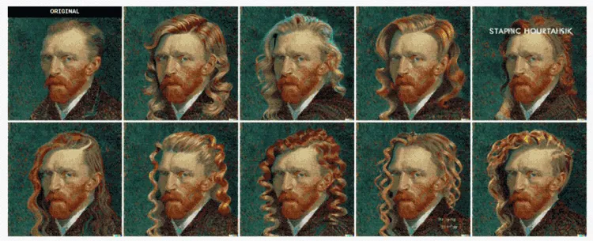
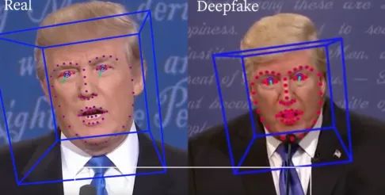

The dangers of new technologies
A connected world
Today, technology is omnipresent in our world. Every day we use websites, applications and objects connected to the internet. We live in a fully connected world. Technological innovations have been evolving at a rapid pace in recent years.
While this may seem like a good thing for humans, it is also problematic, depending on the purpose and use of new technologies.
The end of some professions
Artificial intelligence is developing more and more and the disappearance of certain artistic or manual jobs could occur. For example, recently several AIs have been developed that can automatically draw what you want with the help of commands in English. We can mention in particular Midjourney, DALL-E, the best known. These AIs are certainly very impressive, but this raises a real ethical and moral question: are artistic jobs going to disappear?
These tools are very powerful, even though they are mostly in beta. Who owns the works generated by these AI is also one of the many questions that these tools may raise.
The danger of Deep Fake
Deepfake of former US President Donald Trump